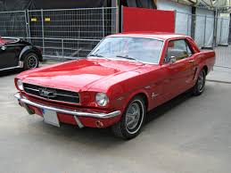
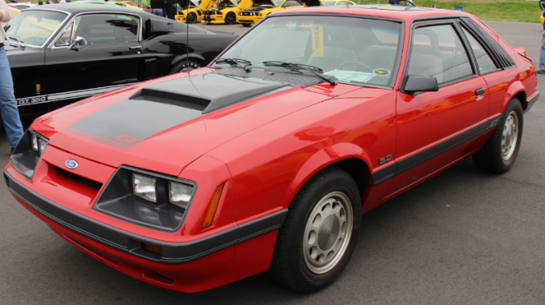
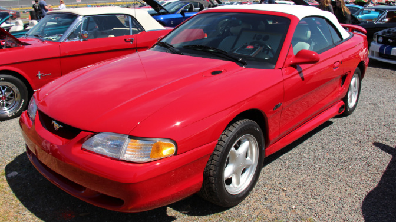
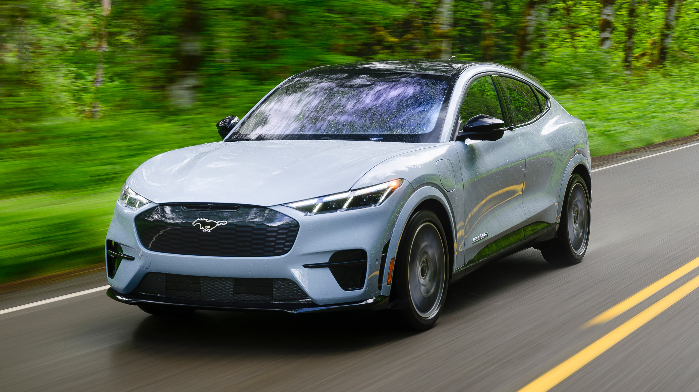

First Generation (1964-1973)

When the first Mustang arrived, it initiated an unprecedented cultural phenomenon, supported by sales records that reshaped the industry. When production commenced in mid-1964, the car offered a customizable platform that allowed buyers to tailor it from a frugal commuter to something more powerful and, shall we say, race-ready. The initial powertrain lineup was modest, anchored by a 170-cubic-inch (2.8-liter) inline-six that produced a meager 101 horsepower. However, the architecture was engineered in such a way that it could accommodate significant power upgrades, which included V8 options. By 1965, Ford introduced the 289-cubic-inch (4.7L) V8 that changed the car’s dynamic profile.
As the decade progressed, the competition came out of the woodwork and the competitive landscape had intensified, which demanded larger displacement and increased output. The chassis was subsequently widened and lengthened to accommodate the formidable big block engine variants that defined the late 1960s muscle car zenith. The track-focused Boss 302 was engineered specifically for Trans-Am homologation and featured a high-revving 302-cubic-inch V8. The Mach 1 prioritized aggressive street styling and straight-line speed and came equipped with a choice of V8 engines - culminating in the 428 (cu in) Cobra Jet.
The aesthetic customization was equally vast, with buyers able to select from numerous interior trims, body styles including hardtop, fastback, and convertible, and an array of vibrant paint codes, though iconic hues like Wimbledon White remained perennial favorites. Ultimately, this generation transitioned from a lightweight, agile coupe into a heavy, specialized muscle car by 1973.
Second Generation (1974-1978)

The Mustang II is the most polarizing era in the vehicle's lineage, and its timing could not have been worse: it arrived just as the 1973 oil crisis decimated demand for fuel-thirsty V8s. Ford executed a radical downsizing strategy that abandoned the “bloated” 1973 architecture for a subcompact platform derived from the Ford Pinto. From a commercial perspective, it was genius! But when it came to performance, it failed to live up to any expectation. The initial 1974 lineup lacked a V8 entirely, relying instead on an 87-hp 2.3-liter inline-four or a sluggish 2.8L V6. The emphasis shifted sharply from raw power to fuel economy, easy maneuvering, and user-friendly interior appointments.
The anemic powertrains and the compromised Pinto-based underpinnings were heavily criticized. However, the market rewarded Ford’s timing, because sales exploded as consumers sought economical alternatives. By 1975, yielding to consumer pressure, Ford shoehorned a heavily restricted 302-cubic-inch V8 into the engine bay. Strangled by primitive catalytic converters and smog equipment, it produced a shockingly low 122 hp. Still, Ford attempted to sustain the performance illusion through aggressive appearance packages like the Cobra II and the flamboyant King Cobra. These trims featured bold decals, front air dams, and hood scoops - all done to mask the underlying mechanical deficiencies.
Then and now, the second-generation Mustang is viewed not as a performance vehicle, but as a critical survival mechanism. Kudos to Ford for preserving the nameplate through an economically hostile environment, ensuring it continued while traditional competitors were discontinued. It was a necessary step for the Blue Oval to ensure the Mustang’s future, albeit with many compromises. And unlike many vehicles of the time, the move ensured that the Mustang navigated the 1970’s restrictive conditions.
Third Generation (1979-1993)

The third generation, universally recognized as the Fox Body, is arguably the most critical juncture in the Mustang’s history. Built on Ford’s versatile Fox platform, this iteration abandoned its traditional styling cues for an aerodynamic, European-influenced wedge design. The architectural shift resulted in a lighter, significantly more rigid chassis, and it was the right foundation for a performance revival. Initially, the powertrain selection remained constrained by the lingering effects of the 1970s: the four-cylinders were carried over and low-output V8s stayed on.
The turning point occurred in 1982 with the reintroduction of the "High Output" 5.0L V8, officially signaling Ford's renewed commitment to horsepower. Through engineering wizardry, including the adoption of advanced electronic fuel injection in 1986, the 5.0 V8 became an industry benchmark for affordable, reliable power. The Fox Body’s lightweight construction, paired with the torquey 5.0L engine, created a formidable drag strip competitor and a favorite among aftermarket tuners. Ford also experimented with alternative performance pathways, most notably with the SVO trim, which utilized a turbocharged 2.3L four-cylinder to deliver V8-rivaling power.
As this generation’s astonishing 15-year production run began drawing to a close, it culminated in the highly sought-after 1993 SVT Cobra. And by then, the Fox Body had successfully rehabilitated the Mustang's reputation. It had slowly erased the stigma of the malaise era (a period in the American automotive industry between 1973-1984 defined by underpowered, poorly built, and styled vehicles resulting from the 1970’s energy crises, stricter emissions regulations, and insurance issues), proving that American engineering could adapt to market demands without sacrificing what defined the segment before.
Fourth Generation (1994-2004)

The fourth generation, internally designated as the SN95, launched in 1994. The mandate was simple: modernize the Mustang while acknowledging its heritage. Ford deployed a retro-modern design language and reintroduced classic styling cues like the galloping horse emblem, side scoops, and tri-bar taillights. The car ran on a stiffer, heavily modified version of the Fox platform, and the initial powertrains were carried over: the base model utilized a 3.8L V6 (later a 3.9L), while the GT retained the venerable 5.0L pushrod V8.
However, this V8 was retired in 1996 and replaced by Ford’s advanced 4.6L Modular overhead-cam V8. Performance reached its peak with the SVT Cobra models and Ford's Special Vehicle Team engineering high-revving, 32-valve DOHC (double overhead cam) variants of the 4.6L engine. In 2003, the SVT Cobra reached its high point with the arrival of the ‘Termninator.’ It featured a factory-supercharged V8 producing 390 hp, paired with a six-speed manual transmission and an independent rear suspension setup. The fourth generation also featured four-wheel disc brakes as standard.
The base 3.8L V6 models (1994 to 2001) suffer from notoriously high head gasket failure rates, which led to overheating, coolant loss, and engine damage if ignored. These early engines also exhibited oil leaks from the intake manifold and valve cover gaskets, and the camshaft position sensor would fail, too. The manual transmissions suffered from parking brake self-adjustment failures, which led to recall. In the V8 models, particularly the first examples of the 4.6L, the plastic intake manifolds were prone to cracking at the coolant crossover. This was replaced by an aftermarket aluminum unit to ensure long-term durability. Further structural issues included widespread paint peeling and hood corrosion due to improper insulation of the aluminum panels.
Fifth Generation (2005-2014)

The fifth-generation Mustang in 2005 was built on the new D2C platform. Ford fully embraced retro-futurism, delivering an exterior that invoked the iconic 1967 and 1968 fastback models. This new architecture was a radical departure from the aging Fox-derived chassis and featured a 6-inch longer wheelbase and a substantially wider track. While the exterior drew compliments, the interior also delivered ergonomic improvements. On the suspension, Ford utilized MacPherson struts in the front and a newly engineered three-link solid rear axle with a Panhard rod. The setup at the rear wasn’t too well-liked by Mustang die-hards, but it was robust, cost-effective, and engineered to manage immense power loads more efficiently than the live axle.
The base model received a 4.0L SOHC (single overhead cam) V6 engine that produced 210 hp, while the GT trim retained a highly refined version of the 4.6L V8 engine that now featured three valves per cylinder and variable camshaft timing. It now produced 300 hp and catapulted the GT back into serious performance territory. To add to the mystique, this era also marked the triumphant return of Carroll Shelby to the Ford fold, resulting in the astonishing 2007 Shelby GT500. Armed with a supercharged 5.4L V8 pushing a colossal 500 hp, it decimated the rivals of the time and re-established Ford’s dominance in the horsepower wars.
Despite the critical acclaim, the early S197 generation exhibits significant reliability vulnerabilities. The most severe and widespread hazard involves the catastrophic Takata airbag recalls; a critical defect where inflators could rupture during deployment and project life-threatening shrapnel into the cabin. This Takata fiasco was so bad that the NHTSA mandated an industry-wide 'do not drive' warning for affected, unrepaired units. Mechanically, the 4.6L 3-valve V8 engines are plagued by spark plug issues, and early automatic transmissions exhibited abrupt shifting and premature failure of internal bands. Aesthetically, paint blistering and peeling is another notable worry, and persistent water leaks into the cabin interior from clogged cowl drains were also reported. This led to severe electrical anomalies and module failures.
Sixth Generation (2015-2023)

The 2015 introduction of the sixth-generation Mustang (S550) changed the car in a big way to truly give it that global sports car status. For the first time in fifty years, Ford definitively abandoned the solid rear axle and replaced it with a more sophisticated, fully independent rear suspension (IRS) across the entire lineup. This monumental chassis upgrade, paired with a new double-ball-joint MacPherson strut front suspension, impacted the Mustang’s dynamic handling profile positively. The S550 eradicated the unpredictable, tail-happy behavior of its forebears, replacing it with a more planted, precise cornering capability that made it a more legitimate challenger to European sports coupes. The exterior styling took on a modern approach, along with a lower and wider stance, a sharply raked windshield, and a fastback profile that prioritized aerodynamic efficiency.
As for powertrains in the US, the 3.7L V6 remained temporarily available, but Ford introduced a technologically advanced 2.3L EcoBoost (turbocharged) four-cylinder. This engine utilized direct injection and twin-scroll turbocharging to deliver 310 hp and 320 lb-ft. The GT trim retained the legendary 5.0L Coyote V8, but it featured comprehensive upgrades that included revised cylinder heads and valvetrain components to produce 435 hp. The new chassis also played home to the track-focused Shelby GT350; a homologation special that featured a 526 hp, flat-plane crank 5.2L 'Voodoo' V8 engine that revved to an astronomical 8,250 RPM.
From a reliability standpoint, the S550 platform houses the best Mustang year in the vehicle's modern history, though it is not completely devoid of faults. Overall build quality had improved, but the early 2.3L turbocharged engines from 2015 and 2016 were prone to head gasket failures. This defect allowed engine coolant to breach the cylinders and mix with the oil, which often required complete engine block replacement if not caught in time. In the V8 models, the Getrag MT82 six-speed manual transmission suffered from premature clutch wear, grinding gears, and broken shift forks during aggressive driving scenarios. A class-action lawsuit has been brought against the Blue Oval about this. Inside, the heat and ventilation system on the seats often failed, and the SYNC 3 infotainment interface would crash without warning. The air conditioning evaporator core would also fail prematurely.
Seventh Generation (2024-Present)

The seventh-generation Mustang carries the S650 designation. It arrived in 2024, representing a calculated, heavily digitized evolution of the existing architecture rather than a complete mechanical reinvention. Built upon a modified version of the D2C platform, the exterior styling features a more pronounced, squared-off front fascia, wider rear haunches, and distinctive tri-bar LED headlights. The biggest transformation occurred inside. Ford completely eradicated the traditional dual-cowl dashboard and replaced it with a fighter-jet-inspired, highly customizable dual-screen digital cockpit. A 12.4-inch digital instrument cluster flows into a 13.2-inch infotainment touchscreen, powered by the Unreal Engine for impressive graphics. Ford was clear: they prioritized the digital user experience in an attempt to attract a younger demographic accustomed to high-end tech interfaces.
Mechanically, the powertrain lineup was refined for maximum efficiency and output. The base model utilizes a redesigned 2.3L turbocharged four-cylinder that now produces 315 hp. It is paired exclusively with a 10-speed automatic transmission. The GT retains the 5.0L Coyote V8, which now boasts a novel dual air-intake box and dual throttle body design. The output comes in at 486 hp when equipped with the active valve exhaust. However, Ford immediately introduced the Dark Horse, a track-focused model featuring a 500-hp Coyote V8 equipped with forged internals from the previous GT500, paired with a six-speed Tremec manual gearbox.
Things were taken even further with the subsequent unveiling of the Dark Horse SC and the hypercar-rivaling GTD. The Dark Horse SC serves as the spiritual successor to the Shelby GT500, packing a supercharged 5.2L Predator V8 generating well over 700 hp, managed by a seven-speed dual-clutch transmission and governed by track-derived variable traction control systems. But the absolute pinnacle of this generation - and arguably the nameplate’s entire history - is the $300,000+ Mustang GTD. Engineered to dominate the Nürburgring, the GTD is essentially a street-legal race car that features an 815-hp dry-sump supercharged V8, a rear-mounted eight-speed dual-clutch transaxle for near 50/50 weight distribution, an inboard pushrod semi-active suspension system, and active aerodynamics.
Because the S650 generation is still in its infancy, long-term reliability data remains largely speculative. The foundational powertrains - specifically the 5.0L V8 and the revised 2.3L EcoBoost - are heavily matured, and the chances of major mechanical failures within the engine block have, statistically, been reduced for early adopters. However, the aggressive shift towards the digital-heavy architecture introduces potential vulnerabilities. The massive dual-screen cockpit, powered by complex software, represents a critical single point of failure.
There have been early reports of sporadic software glitches, screen blackouts, and infotainment lagging, but these are often addressed and fixed through over-the-air updates or dealership module flashing. It is also too early to comment on the longevity of novel, highly stressed components in the extreme variants, such as the carbon-ceramic brakes and the transaxle in the GTD, and the seven-speed dual-clutch transmission in the Dark Horse SC.
Mustang Mach-E

On November 17, 2019, Ford announced the Ford Mustang Mach-E. Unrelated to any of the pony car Mustang versions, it is an electric crossover with rear-wheel or all-wheel drive, depending on trim level. It has 210–375 miles (340–605 km) of range and an updated Ford Sync system with a 15.5 inch display. The Mustang Mach-E comes in several different trims including First Edition, Select, Premium, California Route 1, and GT. The Mach-E also offers two battery options, and Ford is expected to introduce a third option in the future. Although it shares the Mustang name and badge, this vehicle is not counted among the Mustang's seven generations, as it is a separate model produced alongside the existing two-door Mustang rather than being a chronological successor to it, and is designed around a separate vehicle platform.